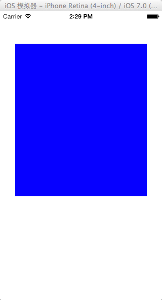

在 iOS 7 中，如果某个UIViewController的 self.view 第一个子视图是UIScollView， 同时当这个UIViewController被 push 或initWithRootController 成为UINavigationController控制的 Controller 时，这个UIViewControlle的 view 的子视图UIScollView的所有子视图， 都会被下移64px。
这个下移 64px 的前提是 navigationBar 和 statusBar 没有隐藏。因为为 statusBar 默认的 Height 是 20px，而 navigatiBar 默认的 Height 是 44px
实例：
1. 在 AppDelegate.m 文件中：
2. 在 ViewController.m 中：
3. 运行后的结果：

4. 现在使用 UINavigationController, 将开始 AppDelegate.m 增加的那两行代码修改成：
5. 现在再次运行程序：
依据结果显示， scrollView 背景色为蓝色的子视图位置自动下移了。 而这个下移的距离刚好是 64.0px
解决方法
1. 第一种：在 ViewController 的 init 的方法中增加一行代码：
2. 第二种： 让UIScrollView 不要成为 ViewController 的 View 的第一个子视图。具体操作：将 viewDidLoad方法 修改成如下：
3. 第三种：将 UIScorllView 的子视图上移 64.0px 。修改 viewDidLoad 方法：